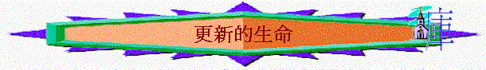

引言：一個信主的人，你認為他的生命應有什麼改變？
一.心意更新（羅12:2）
1.聖經對基督徒有甚麼絕對性的吩咐？
2.「不要效法這個世界」，這世界有甚麼不好，為何我們信主後，不要效法？耶穌又怎樣形容這世代（太16:4）
3.「只要心意更新而變化」包含甚麼含意？試分享你信主後，心意更新而變化，同以前，同世界不同而更新的經歷
4.若我們真能做到不斷心意更新而變化，我們就會如何？神的旨意代表甚麼？包含甚麼之意？「察驗」代表甚麼？
5.最近有否「察驗」一些事情，是神所喜悅的，一些事是神不喜悅的？
二.愛�塈馴�（羅13:8-10）
1.除了要心意更新而變化外，聖經教導我們要彼此相愛，在v8-10中，一個彼此相愛的人，他會怎樣？
2.有甚麼具體表現，代表虧欠人（可參考v.9-10）
3.愛人如己是否單停留在「不可虧欠人」，還要甚麼？
4.有人說「愛一個人，你會時常感覺仍虧欠對方，仍可付上更多．．．．」你同意此說法嗎？有否類此經歷？
三.踏上光明（羅3:11-14）
1.「因為我們得救，現今比初信的時候更近了。」是甚麼意思？這「得救」是否單指剛剛相信耶穌的得救？
2.「我們就當脫去暗味的行為」為何就要脫去？v．13-14題及甚麼行為是「暗味的行為」？現今世代多那種表現？你又想立志不沾染那種行為呢？
3.「帶上光明兵器」何謂光明的表現？「行事為人要端正」「好像行在白晝」是甚麼意思？
你有否認識一些基督徒朋友，同事，他真能做到行事為人端正，好像行在白晝？
總結：
~在今次查經中，我們學到甚麼功課？
~你最想立志追求是那一方面的真理與表現？